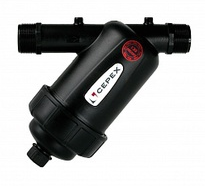
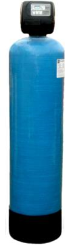
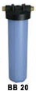

ТЕХНИКО-КОММЕРЧЕСКОЕ ПРЕДЛОЖЕНИЕ
На поставку технологии и оборудования:
для водоподготовки, производительностью до 1,6 м³/ч для хозяйственно-бытового назначения.
для водоподготовки, производительностью до 1,6 м³/ч для хозяйственно-бытового назначения.
На основании протокола исследования качества воды, предлагаем вам комплектоборудования для подготовки воды на хозяйственно-бытовые нужды, который позволит:
Ниже приведены схема очистки, спецификация предлагаемого оборудования и краткое описание элементов системы согласно указаных вами данных в форме.
| Фильтр механический | ||
|---|---|---|
|
Фильтр CEPEX LF 1" (130мкм) Тонкость очистки (мкм) 130 Дисковые фильтры CEPEX обладают высокой производительностью и повышенной грязеемкостью по сравнению с сетчатыми фильтрами. В качестве фильтрующего элемента используются диски из полимеров, на поверхности которых имеются канавки определенной ширины и глубины. При сжатии дисков между ними появляется объемная сетчатая структура, являющаяся рабочим фильтрующим элементом. Вода проходит через плотно сжатые диски, а нерастворенные частицы остаются в междисковом пространстве. Для того чтобы промыть дисковый фильтр, нужно сбросить давление в магистрали, затем снять кожух фильтра и достать фильтрующий элемент, при этом пакет дисков разожмется. В разжатом состоянии диски легко промываются водой под незначительным напором. |
 | |
| Установка умягчения | ||
|
Ионообменная загрузка создана для комплексного решения задач в системах водоподготовки и предназначена для удаления солей жесткости, а так же предотвращает образование накипи в котлах, бойлерах, стиральных и посудомоечных машинах и другой бытовой техники, что продлевают срок службы всей без исключения техники. Обеспечивает комфорт водных процедур, экономию моющих средств и электроэнергии. Данная загрузка состоит из нескольких ионообменных смол разного гранулометрического состава позволяющих эффективно удалять из исходной воды соли жесткости (Ca2+ и Mg2+) В качестве фильтрующей среды используются ионообменные смолы, обладающие следующими свойствами;
Срок службы загрузки до 4-6 лет. |
 | |
| Фильтр с угольным блоком ВВ10 | ||
|
Удаляет из воды бытового назначения неприятный запах и цвет, а также хлор, хлорорганические соединения и другие агрессивные вещества. |
 | |